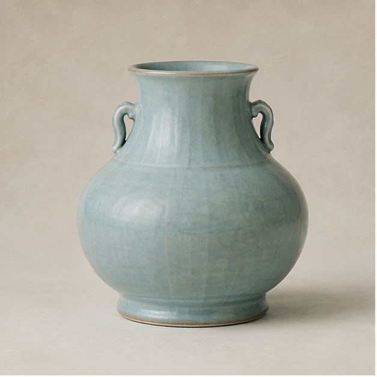

第二展厅EXHIBITION 02
物色生香
器物无言，颜色自述千年。
颜色从不只存在于名字里。它附着于釉面，沉入丝线，铺展于纸绢，也停留在宫墙与瓦檐之间。在这一展厅，从一件器物开始寻找中国色。

WHERE COLORS LIVE
色从何来
同一种颜色，在不同材质中拥有完全不同的生命。
FEATURED COLLECTION
镇馆色藏
先看四件器物，再进入更完整的中国色谱。
FIND COLORS IN OBJECTS
观物寻色
移动视线，从一件器物中拾取它的颜色。
MY COLOR PICKS
我的拾色
把在器物中发现的颜色带走一小段。
器物会老去，
颜色却仍在被看见。
釉色随火而生，衣色随丝线流转，丹青停在纸绢，朱砂留在宫墙。颜色依附于物，也因此穿越了时间。